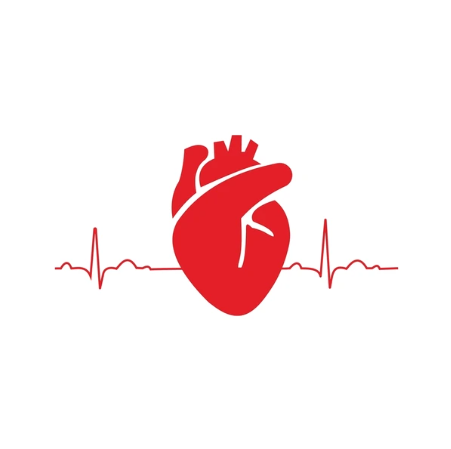

O sistema cardiovascular é responsável pela circulação do sangue no corpo humano, transportando oxigênio e nutrientes para as células e removendo resíduos.
É composto pelo coração, vasos sanguíneos e sangue.
O sistema cardiovascular é responsável pela circulação do sangue no corpo humano, transportando oxigênio e nutrientes para as células e removendo resíduos.
É composto pelo coração, vasos sanguíneos e sangue.
O sistema cardiovascular é vital para a manutenção da homeostase e para o funcionamento adequado de todos os sistemas do corpo.
Insira aqui imagens relacionadas ao sistema cardiovascular:
